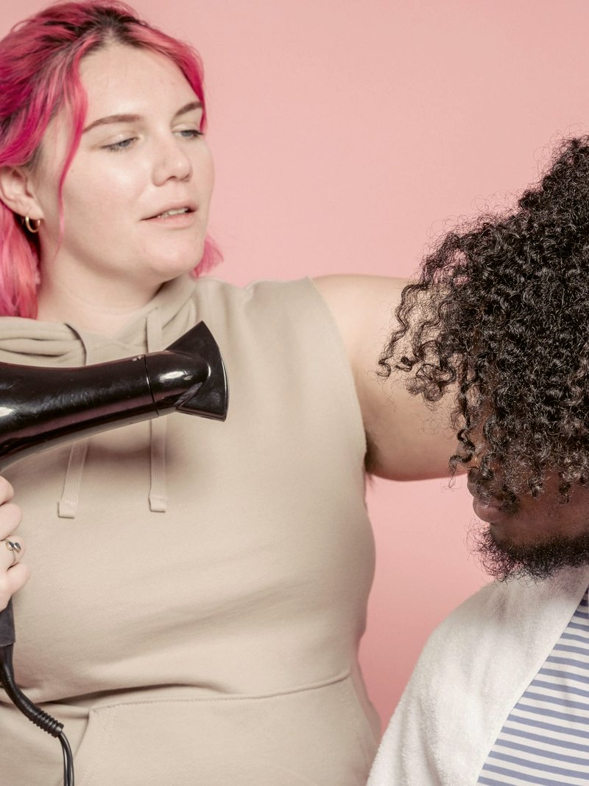
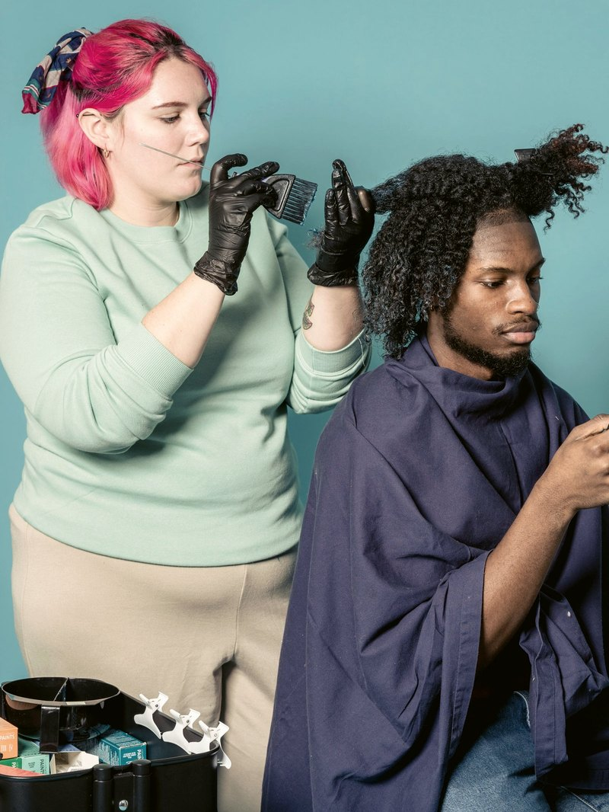

Av. Getúlio Vargas, 840 · Centro de Manaus
Um estúdio de cachos, crespos e cor no Centro — feito para quem já sentiu que não podia entrar em qualquer salão. As paredes são cobertas de cartazes, e cada um deles diz algo que a gente pratica.
Desde outubro de 2021
Matheus Santiago sai constrangido de uma barbearia. Uma amiga conta que sente o mesmo medo. A ideia de um salão onde ninguém precisa se explicar nasce ali.
Perde o emprego na pandemia e começa a atender no salão da tia, no Japiim, com o que tinha.
Abre o estúdio no Centro, na Getúlio Vargas. A parede de cartazes vem junto, desde o primeiro dia.
Dez profissionais LGBTQIAP+ empregados, 5,0 no Google com 435 avaliações e uma fila de gente que atravessa a cidade pelo cabelo — e pelo jeito de ser recebida.
O que fazemos
Corte a seco, fio a fio, respeitando a curvatura. O desenho aparece quando o cabelo seca — e é assim que ele é feito.
Hidratação, definição e finalização para cabelo crespo, com produto pensado para a fibra e não contra ela.
Cor, mechas e correção. É o serviço mais longo da casa — e o motivo do cappuccino de cortesia.
Acompanhamento de quem está deixando a química de lado, sem precisar cortar tudo de uma vez.
Linha vegana e bioativa orgânica do lavatório à finalização, para o cabelo e para quem trabalha com ele.
Corte e cor para todo mundo. Aqui não existe cadeira de homem e cadeira de mulher.
Enquanto a cor age, a casa serve cerveja ou cappuccino.
Não é mimo de campanha. É o jeito de dizer que você pode ficar à vontade pelas próximas três horas.


Contato
Manda uma foto do seu cabelo hoje e conta o que você quer. A gente responde com o serviço, o tempo de cadeira e o horário disponível.